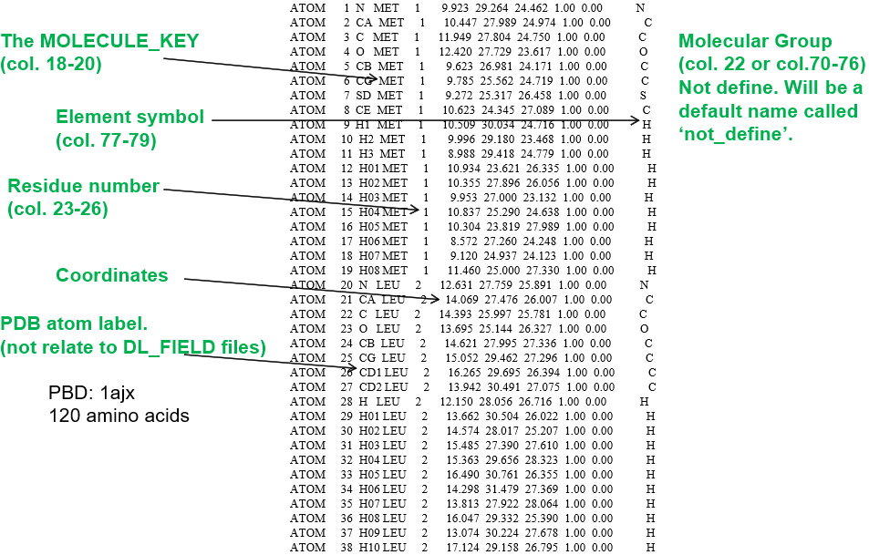
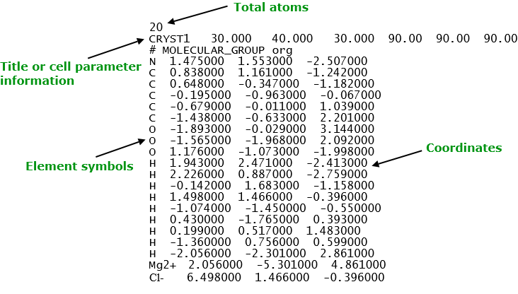
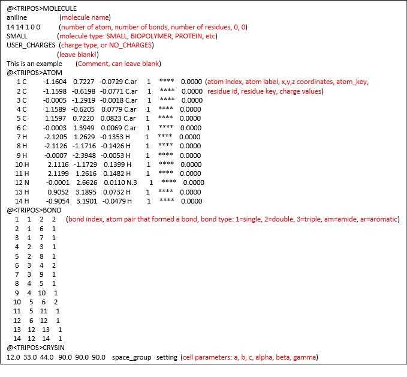

The Input Configuration Files¶
This page describes the use of input files, or users’ system configuration files in DL_FIELD.
DL_FIELD can only recognise three file formats: PDB, mol2 and xyz. They are described in more details as follows:

PDB Format
The PDB files are used for structures in the Protein Data Bank, and hence, the name. The most popular strutures being the proteins, RNA and DNA macromolecules. Below is an example of a PDB protein file, showing various components relavant to DL_FIELD.
{kind=link}
Note
DL_FIELD follows strict PDB format where the various data items must fall within the appropriate range of column numbers. A common error is a poorly setup PDB file, where the items such as MOLECULE_KEYs and residue numbers located outside the permitted range of columns.
DL_FIELD uses PDB file to carry out FF model setup using the template matching procedures.
- MOLECULE_KEY, also called the residue label, must be specified. This information is crucial for DL_FIELD to locate the correct MOLECULE template.
- Residue number - this is the molecule index number, which indicates the extent of atoms that made up a MOLECULE.
- PDB atom labels - these are not related to the ATOM_LABELs in MOLECULE templates. If the element smbol is not specified in column 77-79, then DL_FIELD will look for the element symbols in the PDB atom label columns. DL_FIELD will attempt an ‘educated guess’ if labels are not element symbols. For example, if DL_FIELD detects this is a protein structure, DL_FIELD will extract the elements from the first character of the atom labels.
Note
For organic systems: PDB atom labels can either be element symbols or some artibrary labels, as mentioned above. For inorganic systems: PDB atom labels must be specified as ATOM_KEYs, that matched with the residue labels or MOLECULE_KEYS.
xyz Format
This is the simplest format that contains a minimum amount of atomic information: the element symbols and the corresponding three coordinates. It is suitable for general organic molecules and inorganic materials. Below shows an example of a xyz structure.
{kind=link}
DL_FIELD uses xyz file to carry out molecular topology analysis for all FF schemes.
- The title always appear at the second line. Alternatively, this is where user can also specify the cell parameters information. DL_FIELD will use this information to define the simulation box size.
- Normally, element symbols must be used, especially for organic systems. However, for inorganic systems, users can also insert ATOM_KEYs, instead of element symbols.
- For template-based FF scheme such as CHARMM and AMBER, DL_FIELD will, firstly, identify the molecules from the file and then look for the suitable MOLECULE templates in the library and udff files. DL_FIELD will will report an error if there is no suitable template. Secondly, a normal template matching procedure will be used to set up the FF models.
- DL_FIELD will create a dlf_notation.output file in the output/ directory, showing the ATOM_TYPEs in DL_F Notation.
Note
To use the cell parameter information in the xyz file, remember to specify the word ‘auto’ for the Periodic Condition in the control file. Otherwise, DL_FIELD will take the cell vectors information in the control file as the simulation box.
Note
A common error is to use some arbitrary symbols in the file. For organic systems, standard element symbols must be used, even for charged molecules, such as ammonium and ionic liquids. If there are isolated cations and anions present, then the charge symbols must also be specified. For example, Mg2+, Cl-, as shown in the example above.
Note
For organic systems: Element symbols must be used. For inorganic systems: Either ATOM_KEYs or element symbols must be used. The MOLECULE_KEY directive must also be specified.
Tripos mol2 format
The mol2 file is a complete, portable representation of a SYBYL molecule, which is a notation to describe the structure of chemical molecules. Unlike the PDB format, mol2 files are free format and can contain detailed information of molecular structures.
In DL_FIELD, mol2 files are only applicable to the following FF schemes: OPLS2005, CVFF, PCFF and AMBER16_GAFF.
Diagram below shows a typical mol2 file. The comments are in red letters, indicating the meaning, which do not appear in the original file.
{kind=link}
A typical mol2 file consists of a series of data records classified according to the Record Type Indicator that always begin with the symbol ‘@’ at column 1. The mol2 is a popular file format which can be produced in many modelling packages. For more details, please consult DL_FIELD manual, Section 6.3.